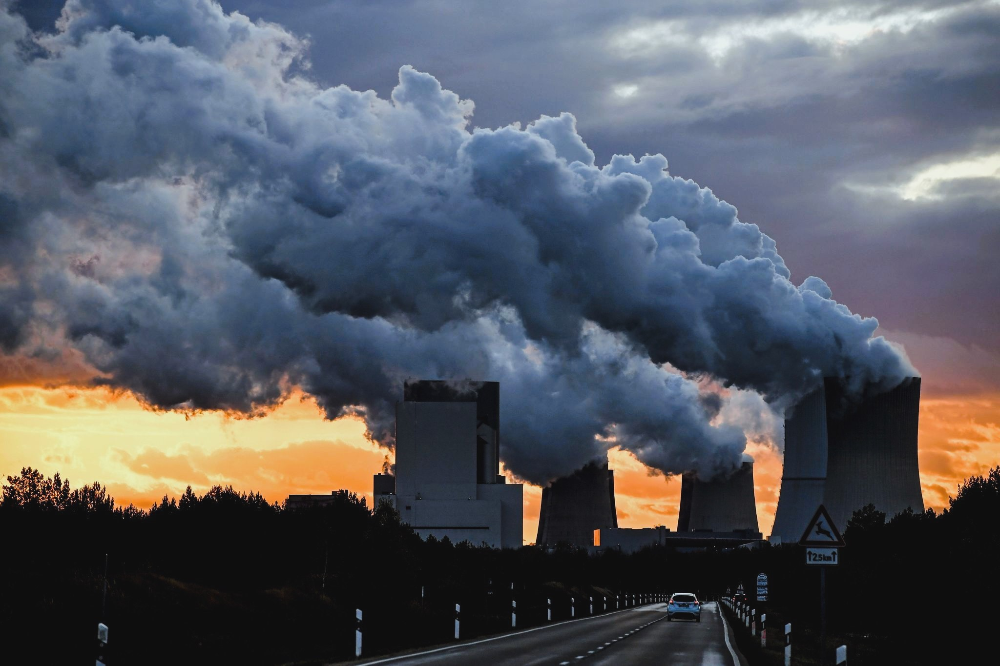

DIFFERENCE OF ENVIRONMENTAL ISSUE AND SOCIAL ISSUE
Jay Laurence Garcia
SOSCITECH
Scientists studying about climate change have demonstrated, Over the past 200 years of climate change research, scientists have proven that nearly all of global warming is from human activities. The greenhouse gases developed from these activities-primarily carbon dioxide and methane-are warming the earth far faster than ever in the last two millennia. As much as some of the world's major thoughts on climate change revolve around raised temperatures, this would only be the beginning of a long, multi-faceted story. The earth system is connected, and the influence of one area can have a ripple effect of greater dimensions-the breadth of change in an ecosystem, weather patterns, and finally human life.
Climate change's impacts are much more expansive than just temperatures going up. It poses tremendous risks to employment, housing, safety, food production, and general health. Vulnerable populations-mostly the inhabitants of small island nations and developing countries-are already witnessing the grim impacts of climate change. Prolonged droughts are enhancing the risk of starvation while seashore rises combined with the advancing saltwater are now at a critical stage as they are being forced to evacuate their homes in its entirety. Experts believe that with frequent and intense climate change, more people will be displaced and humanity will face a crisis.
Moreover, climate change is not only an environmental issue; it triggers a complex array of social issues. Those problems run the gamut of social dislocation through various communities, food and water shortages, health concerns, and others. An existing base of studies also suggests a relationship between climate change and social justice, as it explains that the weakest section of society is most vulnerable. It's threatening the source of clean water and healthy food for people as well as growing tensions and conflicts over diminishing available resources.
Advertisement
Perception buds : Connect Beyond Words.
Organizations like Aware Super have come a long way in making promises to fight climate change over the last few years. The funds are committed to achieving carbon neutrality by 2050 and have set a number of intermediate goals to reduce the carbon footprint of its portfolio. In a report out last October titled "Destination Net Zero," Aware Super outlined its strategic plan to reach that ambitious target. One of its near-term targets is to cut emissions from its identified equity portfolio by 30% by 2023, using 2019 as a baseline year. Strikingly, since it added a carbon-constrained benchmark in November 2020, this fund already surpassed the target, demonstrating what is possible when proper action takes place.
Humans are both causes and casualties of global warming in myriad and frequently uneven circumstances. A social problem, by definition, refers to any social state or behavioral pattern that negatively impacts individuals, communities, or the physical environment. Traditionally, when early scholars debated on the topic of social problems, this phrase "our physical world" was missing. Today, however, with the urgent need for dealing with climate change, it becomes simply impossible not to add environmental considerations in our understanding of social issues.
As we confront the myriad challenges of climate change, it is very important that we accept its importance as an international issue that transcends borders. Researchers and policymakers will delve into numerous policy options to counter its ravaging effects on man and the environment. It would seek ways to build resilience in communities that would be first to be affected when disruptions brought about by climatic changes were to occur and invest in sustainable practices across all sectors.
Advertisement

FlexiSight : Perfect Vision, Anytime, Anywhere.
From a different perspective, education and social awareness can be massive contributing impulses for a collective approach to this problem. Greater understanding of the relationship between climate systems and social systems can empower the individual toward appropriate action in creating advocacy for policies that are responsive to sustainability and resilience. The educational factor is important because that is going to involve individuals in positive actions against climate change at the local, national, and global dimensions.
For example, new clean energy technologies and agricultural methods are part of new approaches to manage and mitigate climate change challenges. New ways to team up governments, businesses, and communities in assurance of greenhouse gas emissions reduction are required to lead the path for social equity and economic development. It is, indeed urgent. The window of opportunity will soon be lost.
Last, managing climate change requires taking a holistic approach addressing the environmental, social, and economic perspectives. All these elements are so intricately interlinked that we can work towards a better future, more equitable and sustainable for all. Given the scope and complexity of research on climate issues, it is imperative that we continue being watchful and proactive in our pursuit of adaptation to and mitigation of climate change. It's a moment to act, and our responsibility, so we share in creating a more resilient and sustainable world.
GENE THERAPY RESEARCH
Gene therapy and stem cell research can potentially change the medical research landscape by opening up diseases previously thought to be incurable for investigation and interference. Such promise, however, is accompanied by a set of ethical and social considerations that call for further scrutiny. The most vital question pertains to ethical considerations would be the concept of informed consent and should assume foremost importance so patients are...
Nanotechnology’s Great Power:Balancing Innovation for a Responsible Future.
As nanotechnology advances, its capacity to transform various sectors such as medicine, energy and materials science becomes more distinct. Considering the innovative drug delivery systems that precisely target cancer cells; they exemplify the remarkable potential of this field. However, as Uncle Ben articulated in a Spiderman film, "with great power comes great responsibility." The swift advancement...
Respect the Balance: Why Protecting Nature Means Protecting Ourselves
Imagine a world where the rivers are no longer clean, where the forests are silent, and where whole species—animals, plants, insects—are forever exterminated. It sounds like some dystopian novel being brought to life, but this reality is sneaking in upon us all much sooner than we imagined. This destruction is not something that occurs "out there," in far-off rainforests or oceans we never see...